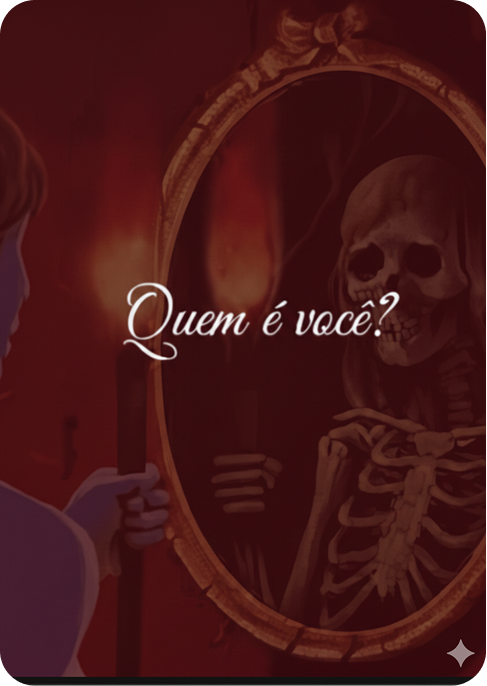
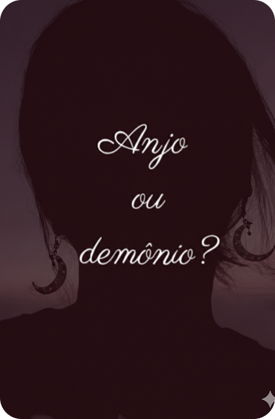
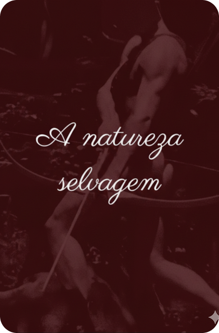
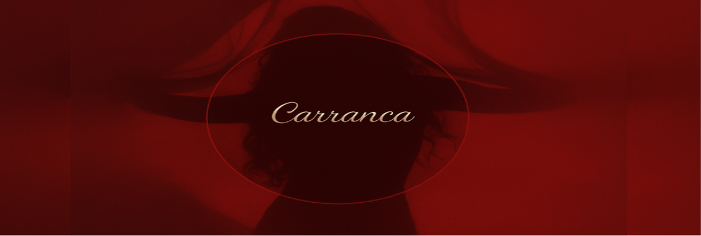

É necessario saber que
Embora eu possa ser carismática e amigável, também posso ser maldita e sem caráter, não me ofenda nas consultas de tarô. A boca que abençoa também é a que amaldiçoa.
Oráculo é oráculo
Meus trabalhos não substituem ajuda de profissionais, sejam eles: Médicos, psicólogos, psiquiatras, advogados, entre outros...
Quem sou eu
Me chamo Selene, tenho 21 anos, devota de Afrodite há muitas vidas, defendo uma bruxaria consciente, da qual resiste a imposições e luta contra opressões, magia, se for magia, é política! Bruxa, feiticeira, pesquisadora eterna vítima e aprendiz da minha própria consciência.

Suas mensagens estão seguras comigo
Entrego um serviço de confidencialidade, o que foi dito entre nós está entre nós, até que seja levado junto à morte.

Não é minha responsabilidade
Não me responsabilizo por ações consequentes após consultas comigo, eu apenas te mostro o caminho, o que você irá fazer com essa informação não cabe à minha responsabilidade.

Métodos
A destemida
Esse método é uma consulta completa, onde iremos ver sobre o âmbito amoroso, profissional e espiritual. Aqui dirá o presente, os obstáculos e aconselhamentos futuros para cada âmbito. É uma análise completa da sua vida e tende ser uma consulta intensa. Verá que não há nada a temer.
R$250,00
Quem soltou os cães ? (AMOROSO)
Esse é o método em que entramos no inconsciente do seu parceiro, podendo trazer a glória ou a ruína. O motivo é prático: aqui, vamos ver como ele(a) está com relação a você, podendo ser positivo ou negativo. Pegamos os pensamentos, sentimentos e intenções com relação a você e o futuro da relação. Pense antes de fazer esse método. Esteja preparada(o). Vamos farejar.
R$ 190,00
Abutres do velho mundo
Esse é um método de análise. Vamos analisar com o oráculo se existe uma energia nociva que trava seus caminhos, e em qual área é necessário ter uma limpeza energética.
R$ 120,00
A cura ou o veneno?
Esse é um método para situações que julgamos não ter saída, no qual não sabemos se devemos ficar ou partir. Por isso, se chama A Cura ou o Veneno. Esse método serve para trabalho, ciclo social, religião, mudanças de casa, de estado etc. Não é válido para o amoroso. Caso tiver dúvidas de qual caminho seguir, eu poderei mostrar o caminho. Você deseja beber a cura ou o veneno?